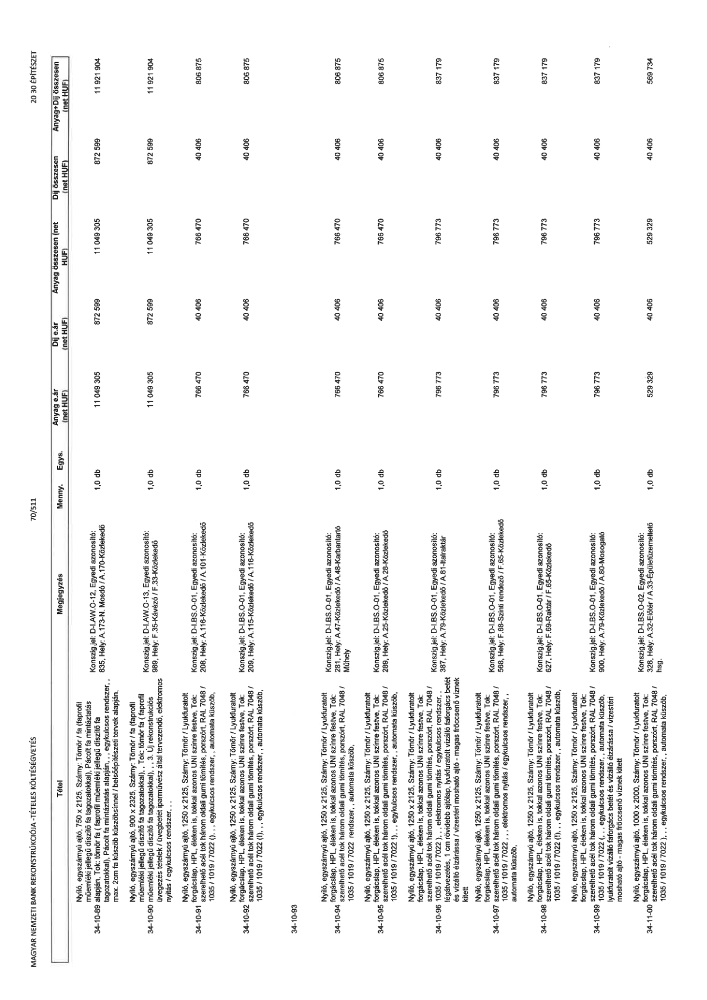

| Tétel | Megjegyzés | Menny. | Egys. | Anyag e.ár (net HUF) | Díj e.ár (net HUF) | Anyag összesen (net HUF) | Díj összesen (net HUF) | Anyag+Díj összesen (net HUF) |
|---|---|---|---|---|---|---|---|---|
| 34-10-89 alapján, Nyíló, egyszárnyú ajtó, 750 x 2125, Szárny: Tömör / fa (faprofil műemléki jellegű díszítő fa tagozatokkal), Pácolt fa mintáztatás alapján, Tok: tömör fa (faprofil műemléki jellegű díszítő fa tagozatokkal), Pácolt fa mintáztatás alapján, , egykulcsos rendszer, , max. 2cm fa küszöb küszöbsínnel / belsőépítészeti tervek alapján, | Konszig.jel: D-I.AW-O-12; Egyedi azonosító: 835, Hely: A.173-N. Mosdó / A.170-Közlekedő | 1,0 | db | 11 049 305 | 872 599 | 11 049 305 | 872 599 | 11 921 904 |
| 34-10-90 alapján, Nyíló, egyszárnyú ajtó, 900 x 2325, Szárny: Tömör / fa (faprofil műemléki jellegű díszítő fa tagozatokkal), Tok: tömör fa (faprofil műemléki jellegű díszítő fa tagozatokkal), , 3. Új rekonstrukciós üvegezési tételek / üvegehető iparművész által tervezendő, elektromos nyitás / egykulcsos rendszer, , , | Konszig.jel: D-I.AW-O-13; Egyedi azonosító: 989, Hely: F.35-Kávézó / F.33-Közlekedő | 1,0 | db | 11 049 305 | 872 599 | 11 049 305 | 872 599 | 11 921 904 |
| 34-10-91 alapján, Nyíló, egyszárnyú ajtó, 1250 x 2125, Szárny: Tömör / Lyukfuratolt forgácslap, HPL éléken is, tokkal azonos UNI színre festve, Tok: szerelhető acél tok három oldali gumi tömítés, porszórt, RAL 7048 / 1035 / 1019 / 7022 (!) , , egykulcsos rendszer, , automata küszöb, | Konszig.jel: D-I.BS-O-01; Egyedi azonosító: 208, Hely: A.116-Közlekedő / A.101-Közlekedő | 1,0 | db | 766 470 | 40 406 | 766 470 | 40 406 | 806 875 |
| 34-10-92 alapján, Nyíló, egyszárnyú ajtó, 1250 x 2125, Szárny: Tömör / Lyukfuratolt forgácslap, HPL éléken is, tokkal azonos UNI színre festve, Tok: szerelhető acél tok három oldali gumi tömítés, porszórt, RAL 7048 / 1035 / 1019 / 7022 (!) , , egykulcsos rendszer, , automata küszöb, | Konszig.jel: D-I.BS-O-01; Egyedi azonosító: 209, Hely: A.115-Közlekedő / A.116-Közlekedő | 1,0 | db | 766 470 | 40 406 | 766 470 | 40 406 | 806 875 |
| 34-10-94 alapján, Nyíló, egyszárnyú ajtó, 1250 x 2125, Szárny: Tömör / Lyukfuratolt forgácslap, HPL éléken is, tokkal azonos UNI színre festve, Tok: szerelhető acél tok három oldali gumi tömítés, porszórt, RAL 7048 / 1035 / 1019 / 7022 (!) , , egykulcsos rendszer, , automata küszöb, | Konszig.jel: D-I.BS-O-01; Egyedi azonosító: 261, Hely: A.47-Közlekedő / A.48-Karbantartó Műhely | 1,0 | db | 766 470 | 40 406 | 766 470 | 40 406 | 806 875 |
| 34-10-95 alapján, Nyíló, egyszárnyú ajtó, 1250 x 2125, Szárny: Tömör / Lyukfuratolt forgácslap, HPL éléken is, tokkal azonos UNI színre festve, Tok: szerelhető acél tok három oldali gumi tömítés, porszórt, RAL 7048 / 1035 / 1019 / 7022 (!) , , egykulcsos rendszer, , automata küszöb, | Konszig.jel: D-I.BS-O-01; Egyedi azonosító: 289, Hely: A.25-Közlekedő / A.28-Közlekedő | 1,0 | db | 766 470 | 40 406 | 766 470 | 40 406 | 806 875 |
| 34-10-96 alapján, Nyíló, egyszárnyú ajtó, 1250 x 2125, Szárny: Tömör / Lyukfuratolt forgácslap, HPL éléken is, tokkal azonos UNI színre festve, Tok: szerelhető acél tok három oldali gumi tömítés, porszórt, RAL 7048 / 1035 / 1019 / 7022 (!) , , elektromos nyitás / egykulcsos rendszer, , légátvezetés, 1 cm rövidebb ajtólap, lyukfuratolt vízálló faforgács betét és vízálló elzárással / vízzáró mosható ajtó - magas fröccsenő víznek kitett | Konszig.jel: D-I.BS-O-01; Egyedi azonosító: 387, Hely: A.79-Közlekedő / A.81-Iratraktár | 1,0 | db | 796 773 | 40 406 | 796 773 | 40 406 | 837 179 |
| 34-10-97 alapján, Nyíló, egyszárnyú ajtó, 1250 x 2125, Szárny: Tömör / Lyukfuratolt forgácslap, HPL éléken is, tokkal azonos UNI színre festve, Tok: szerelhető acél tok három oldali gumi tömítés, porszórt, RAL 7048 / 1035 / 1019 / 7022 (!) , , elektromos nyitás / egykulcsos rendszer, , légátvezetés, 1 cm rövidebb ajtólap, lyukfuratolt vízálló faforgács betét és vízálló elzárással / vízzáró mosható ajtó - magas fröccsenő víznek kitett | Konszig.jel: D-I.BS-O-01; Egyedi azonosító: 568, Hely: F.68-Szinti rendező / F.65-Közlekedő | 1,0 | db | 796 773 | 40 406 | 796 773 | 40 406 | 837 179 |
| 34-10-98 alapján, Nyíló, egyszárnyú ajtó, 1250 x 2125, Szárny: Tömör / Lyukfuratolt forgácslap, HPL éléken is, tokkal azonos UNI színre festve, Tok: szerelhető acél tok három oldali gumi tömítés, porszórt, RAL 7048 / 1035 / 1019 / 7022 (!) , , elektromos nyitás / egykulcsos rendszer, , légátvezetés, 1 cm rövidebb ajtólap, lyukfuratolt vízálló faforgács betét és vízálló elzárással / vízzáró mosható ajtó - magas fröccsenő víznek kitett | Konszig.jel: D-I.BS-O-01; Egyedi azonosító: 627, Hely: F.69-Raktár / F.65-Közlekedő | 1,0 | db | 796 773 | 40 406 | 796 773 | 40 406 | 837 179 |
| 34-10-99 alapján, Nyíló, egyszárnyú ajtó, 1250 x 2125, Szárny: Tömör / Lyukfuratolt forgácslap, HPL éléken is, tokkal azonos UNI színre festve, Tok: szerelhető acél tok három oldali gumi tömítés, porszórt, RAL 7048 / 1035 / 1019 / 7022 (!) , , elektromos nyitás / egykulcsos rendszer, , légátvezetés, 1 cm rövidebb ajtólap, lyukfuratolt vízálló faforgács betét és vízálló elzárással / vízzáró mosható ajtó - magas fröccsenő víznek kitett | Konszig.jel: D-I.BS-O-01; Egyedi azonosító: 900, Hely: A.79-Közlekedő / A.80-Mosogató | 1,0 | db | 796 773 | 40 406 | 796 773 | 40 406 | 837 179 |
| 34-11-00 alapján, Nyíló, egyszárnyú ajtó, 1000 x 2000, Szárny: Tömör / Lyukfuratolt forgácslap, HPL éléken is, tokkal azonos UNI színre festve, Tok: szerelhető acél tok három oldali gumi tömítés, porszórt, RAL 7048 / 1035 / 1019 / 7022 (!) , , egykulcsos rendszer, , automata küszöb, | Konszig.jel: D-I.BS-O-02; Egyedi azonosító: 328, Hely: A.32-Előtér / A.33-Épületüzemeltető hsg. | 1,0 | db | 529 329 | 40 406 | 529 329 | 40 406 | 569 734 |
